Lab 08: External Mail Flow and DNS Records
Configured external mail flow for the Nietz Ltd Microsoft 365 tenant, connected Exchange Online to the public domain, enabled DKIM, published DMARC and validated inbound and outbound delivery through the Support shared mailbox.
Overview
In this lab, I connected the public domain nietz.co.uk to Microsoft 365 Exchange Online by configuring the required DNS records in Cloudflare and confirming Microsoft 365 recognised the records as valid.
I then enabled DKIM, published a DMARC monitoring record, and validated external mail flow by sending and receiving test messages through the Support shared mailbox.
Objective
The objective was to prove that nietz.co.uk was correctly configured for Exchange Online mail routing, Outlook Autodiscover, SPF, DKIM and DMARC, and that the Support shared mailbox could send and receive external mail successfully.
Environment
| Component | Value |
|---|---|
| Company | Nietz Ltd |
| Public / tenant domain | nietz.co.uk |
| Microsoft 365 tenant domain | nietzltd.onmicrosoft.com |
| DNS hosting provider | Cloudflare |
| Mail platform | Exchange Online |
| Shared mailbox validated | support@nietz.co.uk |
| External test sender / recipient | kris.nietzold@gmail.com |
| Administration portals used | Microsoft 365 admin center, Exchange admin center and Cloudflare DNS |
Configuration
1. Domain Status Before Exchange DNS Connection
I reviewed the Microsoft 365 domain status for nietz.co.uk before connecting Exchange Online DNS services.
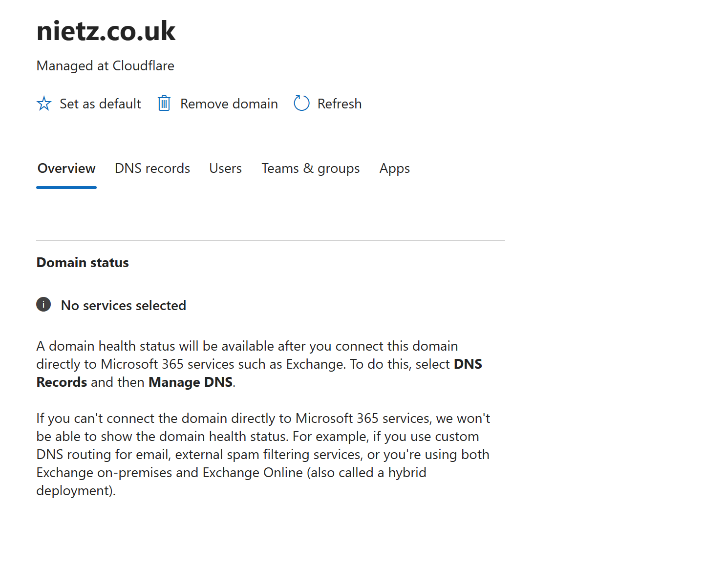
2. Required Exchange Online DNS Records
I reviewed the Microsoft 365 DNS requirements for Exchange Online and identified the required MX record, Autodiscover CNAME record and SPF TXT record.
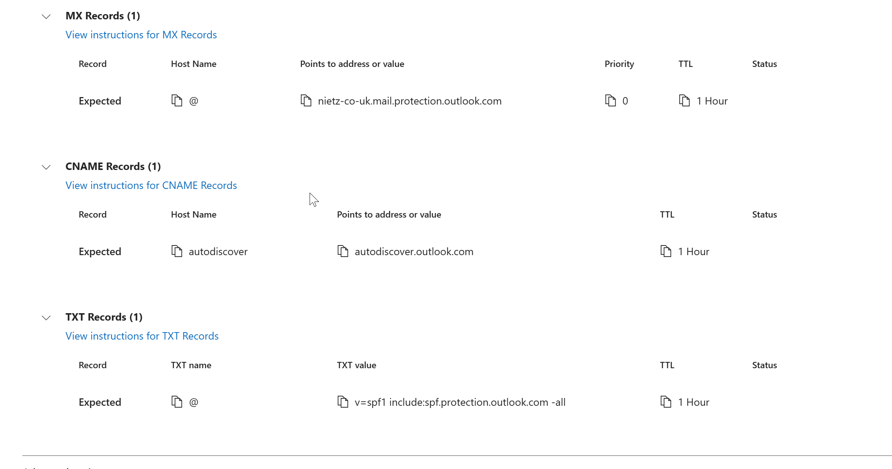
3. Exchange DNS Records Added in Cloudflare
I added the required Exchange Online MX record, Autodiscover CNAME record and SPF TXT record in Cloudflare and confirmed that the records were set to DNS only where appropriate.
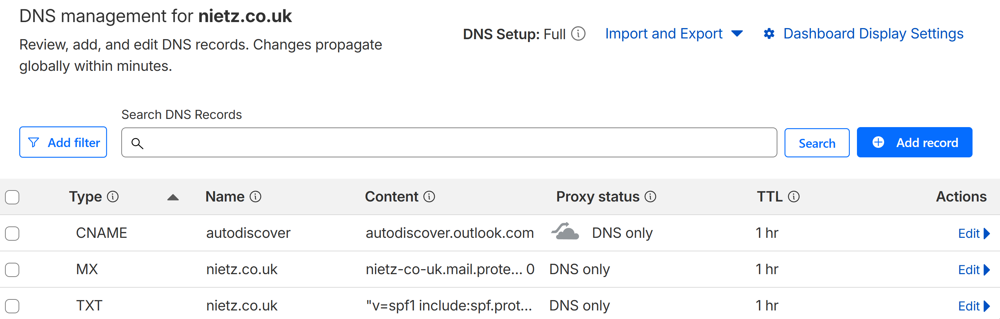
4. Microsoft 365 DNS Health Confirmed
I returned to Microsoft 365 and confirmed that the Exchange DNS records were detected successfully.
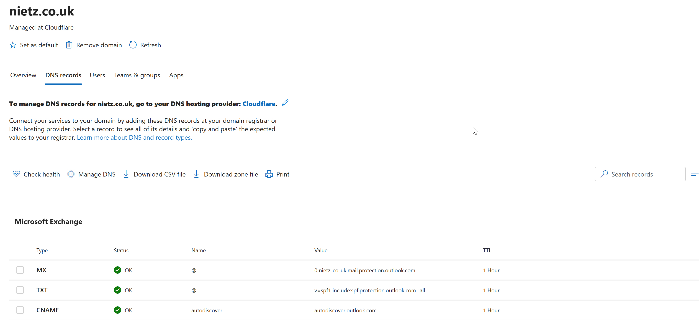
5. DKIM Status Before Configuration
I reviewed the DKIM status in the Exchange admin center and confirmed that nietz.co.uk was not yet signing messages with DKIM because the required selector records were missing.
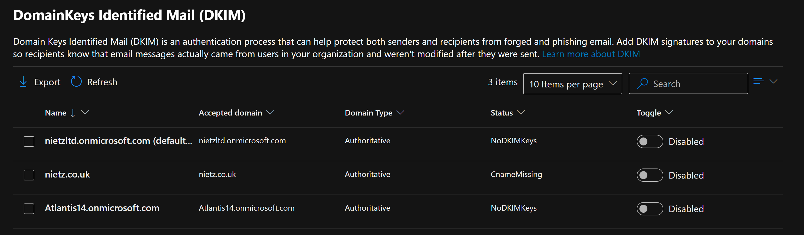
6. DKIM Selector Records Identified
I opened the DKIM configuration details for nietz.co.uk and recorded the required selector CNAME records.
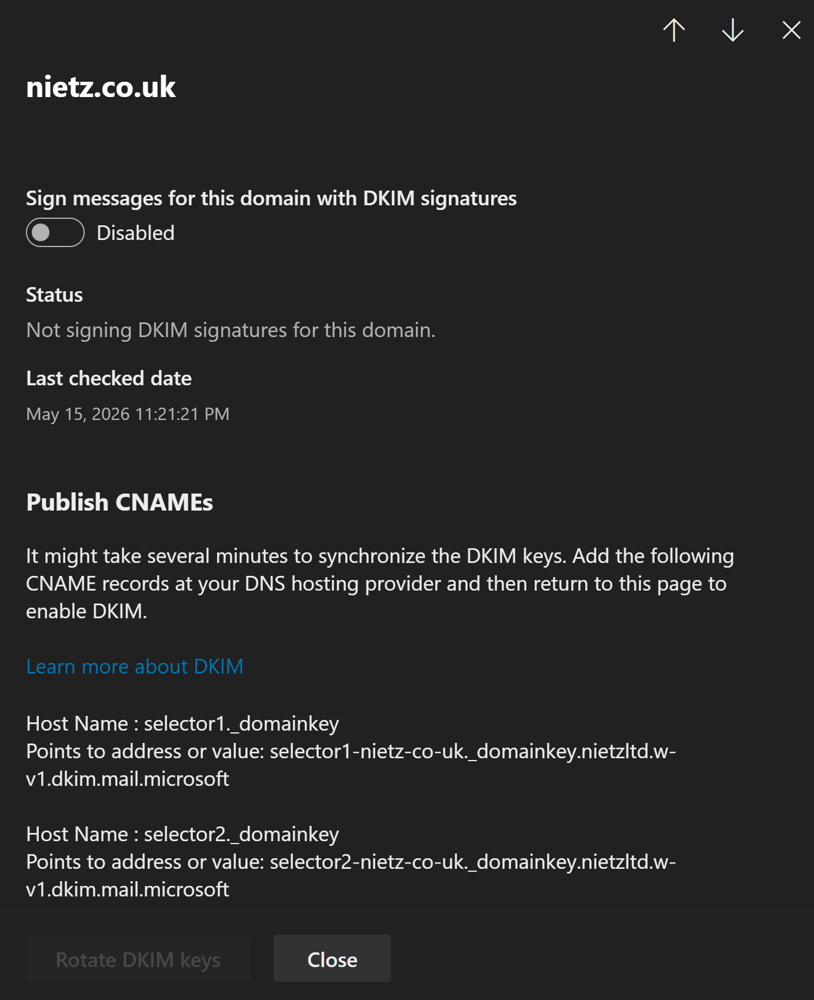
7. DKIM CNAME Records Added in Cloudflare
I added the required DKIM selector CNAME records in Cloudflare and confirmed that both records were present.
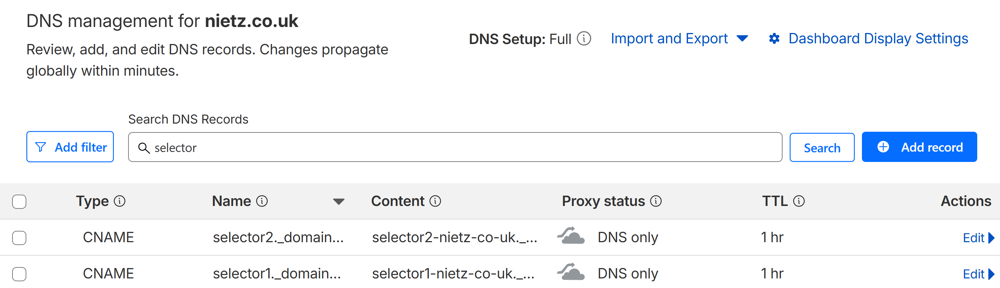
8. DKIM Enabled for the Domain
I enabled DKIM signing for nietz.co.uk after the CNAME records were available in public DNS.
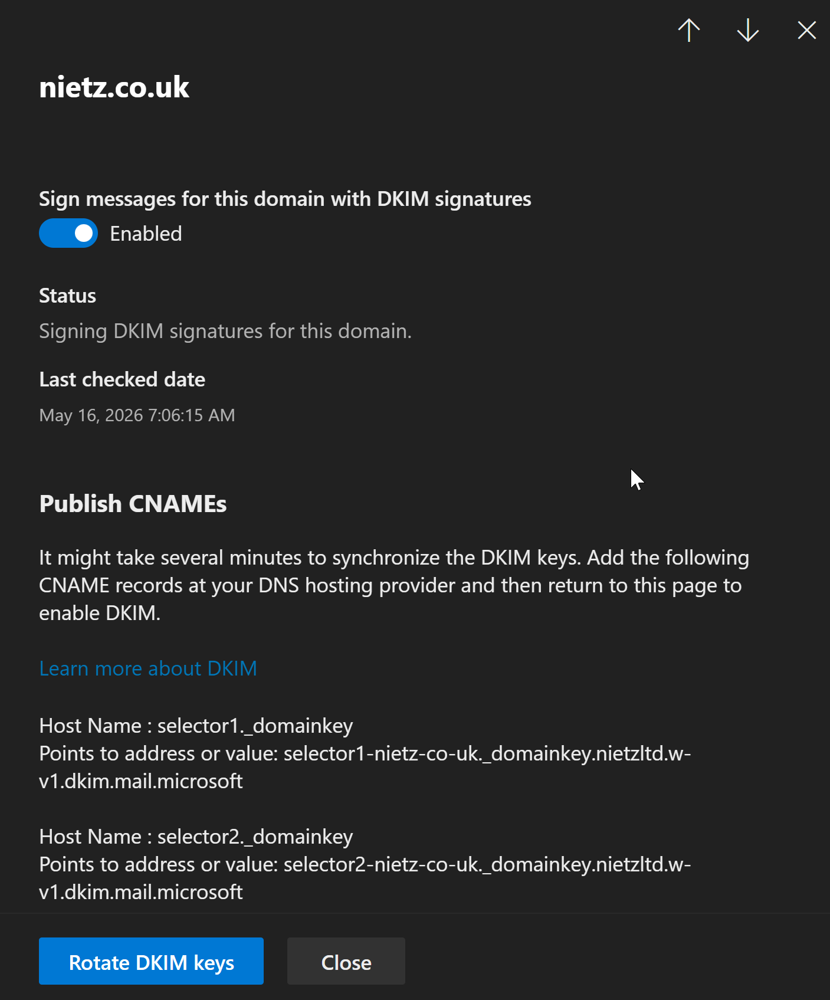
9. DMARC Record Published
I added a DMARC TXT record for nietz.co.uk in Cloudflare using monitoring mode, so DMARC reporting could be introduced without immediately rejecting mail.
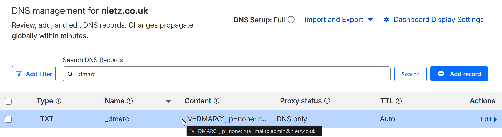
10. External Inbound Mail Received
I sent an external test message from Gmail to the Support shared mailbox and confirmed that Exchange Online delivered the message to support@nietz.co.uk.
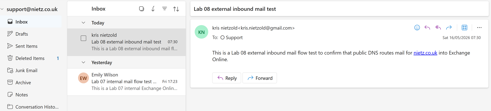
11. External Outbound Mail Sent from Support
I sent an outbound test message from the Support shared mailbox to an external Gmail address.
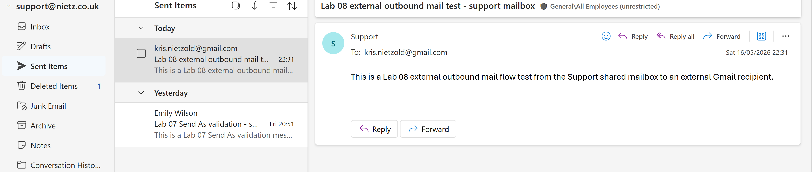
12. External Outbound Mail Received in Gmail
I confirmed that the external Gmail mailbox received the message sent from support@nietz.co.uk.
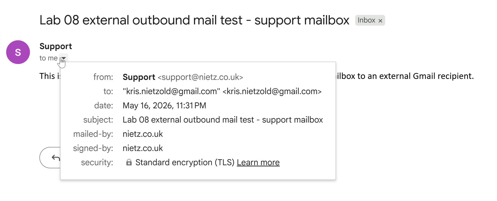
13. Message Trace Validation
I used Exchange Online message trace to confirm that the external inbound and outbound test messages were processed successfully.
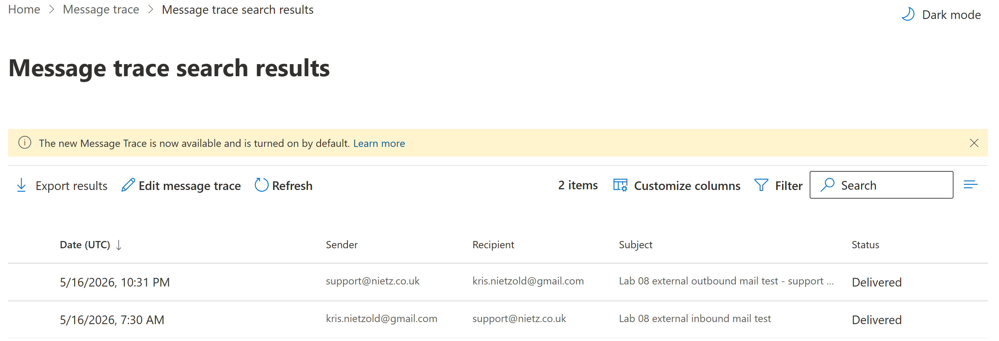
Validation
The lab was validated when Microsoft 365 confirmed the Exchange Online DNS records, Cloudflare showed the required MX, Autodiscover CNAME, SPF TXT, DKIM CNAME and DMARC TXT records, DKIM signing was enabled, and external mail successfully flowed into and out of the Support shared mailbox.
External inbound delivery was confirmed when the Support shared mailbox received a Gmail test message. External outbound delivery was confirmed when Gmail received a message sent from the Support shared mailbox. Exchange Online message trace confirmed the mail flow results from an administrator view.
Key Technical Outcomes
This lab demonstrated how public DNS controls Microsoft 365 mail routing and how Exchange Online depends on correctly published MX, CNAME and TXT records.
It also showed the relationship between SPF, DKIM and DMARC in Microsoft 365 mail authentication, and how message trace can validate delivery after DNS and mailbox configuration changes.
Summary
- I connected
nietz.co.ukto Exchange Online using the required Microsoft 365 DNS records. - I configured the Exchange Online MX record, Autodiscover CNAME record and SPF TXT record in Cloudflare.
- I enabled DKIM signing for the custom domain after publishing the required selector records.
- I published a DMARC monitoring record for the domain.
- I validated inbound and outbound external mail flow through the Support shared mailbox.
- I confirmed delivery using Exchange Online message trace.